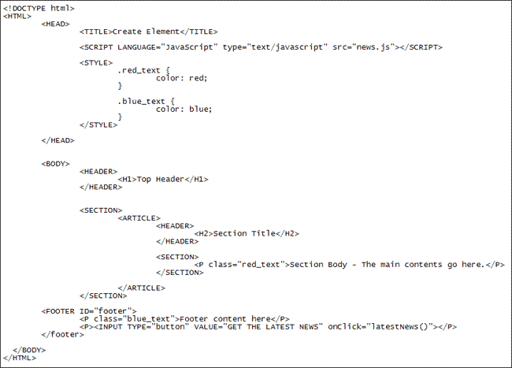
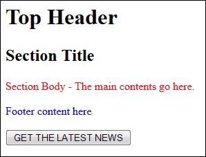

Javascript and HTML Elements
You can use Javascript to manipulate the HTML elements in the BODY section of your HTML. We'll look at four ways to do that:
createElement
createTextNode
appendChild
insertBefore
Suppose we wanted to add some latest news comments to a web page. The news changes all the time. So we want a quick and easy way to update the news on the page. We can do it with an external Javascript file that references an ID in the BODY of the HTML.
For this section, you can download our HTML5 web page. Click below and it will open in a new window or tab. The file is a text file, so you'll need to save it as html_elements.html rather than html_elements.txt as it is now. If you're not sure how to do this then refer to the earlier page on this topic. Here's the file, though:
The code should look like this:

The first thing to notice when you access the code is the SCRIPT tags in the head section:
<SCRIPT LANGUAGE="JavaScript" type="text/javascript" src="news.js"></SCRIPT>
This is pointing to an external Javascript file called news.js. We'll get to that in a moment.
The important part in the BODY of the HTML is this part:
<FOOTER ID="footer">
This sets up an ID called footer. When the button below it is clicked, it will call a function with the name latestnews. We'll create this function in our Javascript file.
Before the button is clicked, the web page looks like this:

The script will add the news just above the footer, and after the main contents. We'll continue this lesson on the next page, Create HTML Elements.